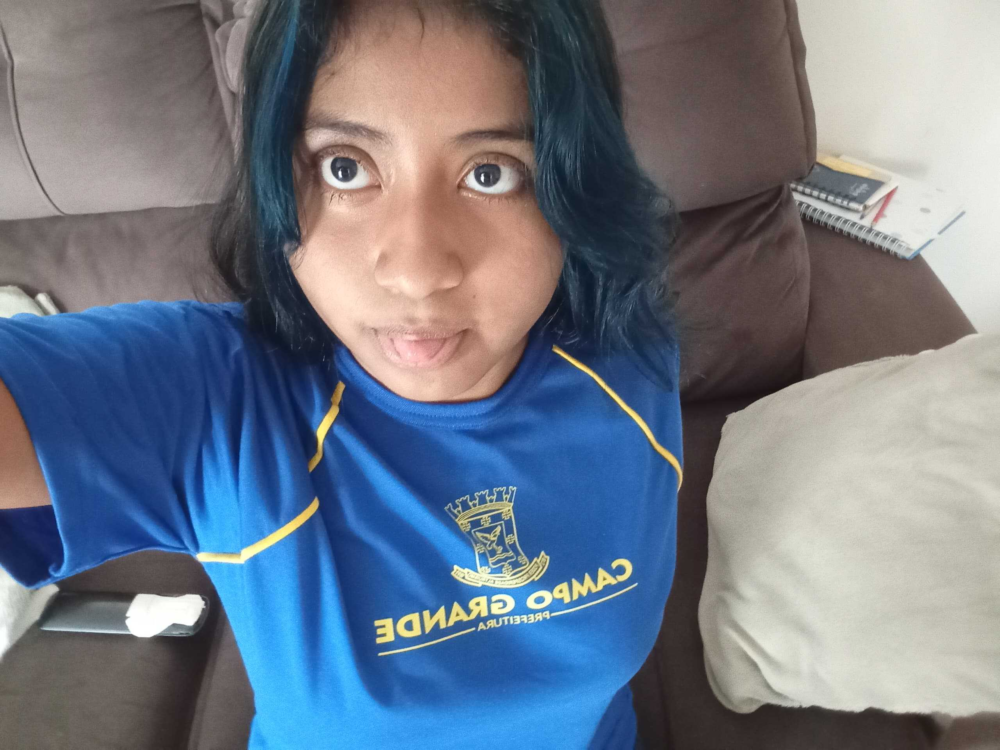

FELIZ ANIVERSARIO 🎉


livia, sei q o momento agr n vai ser de muita alegria para vc e que parece que tudo esta dando errado
mas tudo va ficar certo, vc vai superar seus problemas e se me permitir quero supera-los ao seu lado
toda vez q eu falo com vc ou vejo vc, me bate uma sensação de saudade e que ao mesmo fico triste por n conseguir suprir ela mas qnd falo com vc tudo melhora e queria q vc sentisse o msm
livia,vc ja passou pelo meu coração, pelo meus pensamentos tudo que vc imaginar vc ja pensei em vc, vc é uma pessoa incrivel para mim sempre me motiva mesmo com vc n estando bem quero que vc saiba q eu te amo muito e vc é a pessoa mais especial da minha vida, hj é dia 07/04/2026 ( dia que estou fazendo isso ) eu quero q seu dia seja incrivel e que vc receba todo amor que for necessario para vc perceber o quão legal vc é, e pra mim o quão perfeita vc é eu te amo, e sempre vou amar saiba disso, posso parecer emocionado fazendo isso tudo, mas como diz uma musica "tudo é por amor" e por vc é mais que amor muito mais
é estranho amar alguém que simplismente abraçar quando dá vontande mas ao mesmo tempo, é assim que eu sei que é real. porque mesmo longe, mesmo dificl, mesmo com saudade eu continuo escolhendo você,sem nem pensar duas vezes .
Eu beijaria cada ferida da sua alma e abraçaria cada tempestade tua. tudo sem precisar de nada em troca
eu poderia acabar por aqui mas, ainda quero falar mais sobre vc , todo dia é uma experiencia nova falar com você e digamos que sem querer querendo eu comprei um presente pra vc hehe, mas vc so vai saber qnd ele chegar, e ve se vai procurar la na frente se ja tiver chegado kkkkk (vou fazer de tudo que chegue no seu aniversario)
e nunca pensei que vc seria tão importante pra mim mas né ja é a segunda vez q eu faço um site inteiro pra vc kk, e espero que seu dia seja incrivel